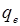
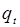
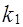

International Journal of Environmental Pollution and Remediation (IJEPR)
ISSN: 1929-2732

Volume 2 - Year 2014 - Pages 89-95
DOI: 10.11159/ijepr.2014.013
Adsorption of Pb (II) Ions from Aqueous Solutions by Water Hyacinth (Eichhornia Crassipes): Equilibrium and Kinetic Studies
Davis Amboga Anzeze1, John Mmari Onyari1, Paul Mwanza Shiundu2, John W Gichuki3
1Department of Chemistry, School of Physical Sciences, College of Biological and Physical Sciences, University of Nairobi,
P.O. Box 30197- 0100, Nairobi, Kenya
amboga.davis@yahoo.com; jonyari@uonbi.ac.ke
2 Department of Chemical Sciences and Technology,The Technical University of Kenya ,Haile Selassie Avenue, P.O. Box 52428 - 00200, Nairobi - KENYA
pmshiundu@kenpoly.ac.ke
3CEnvironmental Protection Department (EPD), Big Valley Rancheria Bond of Pono Indiana, 2726 Mission Rancheria road, Lakeport CA 95453, USA.
jgichuki@big-valley.net
Abstract - The Eichhornia crassipes roots for the removal of Pb (II) ions from aqueous solutions has been investigated. The adsorption of Pb (II) ions was found to be affected by solution pH, contact time, adsorbent dosage, initial metal ion concentration, and temperature. The equilibrium was analysed using Langmuir and Freundlich isotherm models. The data was found to have a closer correlation with the Freundlich isotherm as evidenced by a higher correlation coefficient (R2). The biosorption capacity for E. crasippes was found to be 16.350 mg g-1. The Kinetics data was also subjected to pseudo-first-order and the pseudo-second-order kinetic models. The data could be explained better using the pseudo-second-order kinetic model.
Keywords: Biosorption, Water hyacinth (E. crassipes), Heavy metal ions, Isotherms, Kinetics.
© Copyright 2015 Authors - This is an Open Access article published under the Creative Commons Attribution License terms. Unrestricted use, distribution, and reproduction in any medium are permitted, provided the original work is properly cited.
Date Received: 2014-02-09
Date Accepted: 2014-04-17
Date Published: 2014-10-03
1. Introduction
Heavy metals in water have been a major preoccupation for researchers for many years due to their toxicity towards aquatic life, human beings and environment [1]. This is because they do not biodegrade unlike organic pollutants, making their presence in industrial effluents and drinking water a public health concern [2].
Despite their poisonous nature the heavy metals are used in various ways. Lead is an essential element in the manufacture of bullets, pipes, lead-acid accumulators and welding. Lead in the environment has negative impacts which include severe damage to the kidney, nervous system, reproductive system liver and brain [3, 4]. Therefore it must be removed from the water and waste waters in order to safeguard human and environmental health [5].
The conventional removal methods for lead such as chemical precipitation, ion exchange, electrochemical deposition solvent extraction are not only expensive but they also generate secondary sludge which at times is more difficult to treat [6]. The methods are also ineffective in removal of heavy metals at low concentrations of < 100 mg L-1 [7]. Due to the stringent environmental regulations on the minimum acceptable amounts of Pb (II) ions in drinking water, irrigation water and industrial effluents, there is need to come up with novel cost effective technologies for Pb (II) ions removal.
Previously several materials have been investigated for removal of heavy metals from water and waste waters. This includes heartwood powder of Areca catechu [8, 9, 10, 11]<
The objective of this study was to investigate the application of E. crasippes an invasive weed species which has potential to successfully colonize, spread, and subsequently displace vegetation and disrupt ecosystems [12] as an adsorbent for Pb (II) ions removal from aqueous solutions.
The effects of several physico-chemical parameters such as pH, adsorbent dosage, contact time, initial metal ion concentration and temperature that affect adsorption were investigated. Equilibrium isotherm models and kinetic models were applied to the data obtained for a better understanding of the adsorption process.
2. Materials and Methods
1.1. Biomass Preparation
E. crassipes plants were harvested from Winam Gulf, Kisumu bay at Kisat and Hippo point of L. Victoria, Kenya. The collected biomass was washed several times with tap water to remove adhering dirt. The washed biomass was then cut into roots, shoots and stems and the parts dried separately for 2 week. The dried brown plant biomass were then transported to the University of Nairobi laboratories were they were further dried and later ground and sieved to various particle sizes( <75µm, >75< 300 µm, >300< 425 µm and > 425 µm). The material was washed again using distilled water, then dried in an oven for 48 hours at 70°C then stored in plastic containers awaiting biosorption experiments. Preliminary studies indicated that though there was no big difference in the adsorption rates of the various parts the roots were better. Therefore roots were used in this adsorption experiments.
1.2. Chemicals
All chemicals used in the present work were of analytical grade. The stock solution of Pb2+ ions was prepared in 1.0 g L-1 concentration using 1.6066 g Pb(NO3)2 (Sigma Aldrich) then diluted to appropriate concentrations .The pH of the solutions was adjusted using 0.1 mol L-1 HCl and 0.05 mol L-1 NaOH solutions.
1.3. Analysis of Metal Ions
The concentration of Pb (II) ions in the biosorption media was determined using Atomic absorption Spectrophotometer (Varian Spectr AA), equipped with air acetylene burner. The hollow cathode lamp was operating at 8 mA. Analytical wavelength was set at 283.3 nm.
1.4. Biosorption Experiments
Biosorption experiments were conducted at room temperature (26 °C) by agitating a given mass of biosorbent with 20 mL of metal ions solution of desired concentration in 100 ml polypropylene containers using an orbital shaker at a speed of 200 rpm for 20 min except for contact time experiments. The effect of solution pH on equilibrium biosorption of metal ions was investigated under similar experimental conditions between 2.0 and 7.0. After the adsorbate has had the desired contact time of interaction with the adsorbent, the samples were filtered using Whatman no. 42 filter paper and the residual concentration analyzed using CTA- 2000 AAS. However experiments involving effect of contact time used filter paper no 2. For studies on effect of temperature the adsorption studies were carried out at 25, 30, 40, 50, 60 and 70 °C.
The amount of biosorption (q) was calculated by using the equation below.
The biosorption efficiency, A %, of the metal ion was calculated from:
Where Co and Ce are the initial and final metal ion concentrations (mg L-1) respectively. V is the volume of the solution (L) and m is the amount of biosorbent used (g).
3. Results and Discussion
3.1. Effect of pH on Metal Biosorption
Hydrogen ion concentration is one of the important factors that influence the adsorption behavior of metal ions in aqueous solutions. It affects the solubility of metal ions in solution, replaces some of the positive ions found in active sites and affects the degree of ionization of the adsorbate during the process of biosorption. This is because it affects solution chemistry and also the speciation of the metal ions. The effect of initial pH on biosorption of Pb (II) ions onto E.crasippes was evaluated in the pH range of 2.0 to 7.0. Studies in pH range above 7.0 were not attempted as there is precipitation of lead (II) hydroxides. From the Figure 1.
From Figure 1 it could be seen that Pb (II) ions adsorption increased as the pH increased. At low pH values, protons occupy the biosorption sites on the biosorbent surface and therefore less Pb (II) ions can be adsorbed because of electrostatic repulsion between the metal cations and the protons occupying the binding sites.
When the pH was increased, the biosorbent surface became more negatively charged and the biosorption of the metal cations increased drastically until equilibrium was reached at pH 5.0 - 6.0. At pH of >6 .0 there is formation of hydroxylated complexes of the metal ions and these complexes compete with the metal cations for the adsorption sites hence a reduction in the effective metal cations removal. Therefore adsorption experiments at pH above this were not considered.
3.2. Effect of Adsorbent Dosage
The number of available binding sites and exchanging ions for the biosorption depends upon the amount of biosorbent in the biosorption system. This is attributed to the fact that it determines the number of binding sites available to remove the metal ions at a given concentration. The dosage also determines the adsorption capacity of the adsorbent with an increase in mass reducing the adsorption capacity as the mass increase from 0.125 g to 2.5 g per 20 mL of adsorbate. The effect of biomass dosage on adsorption of Pb (II) ions is indicated in Figure 2.
An increase in the percentage adsorption is attributed to an increase in the number of binding sites for the metal cations. Similar results were recorded in the literature for other adsorbents. However the mass could not be increased infinitely as at some point all the solution is sequestered leaving no residual solution for concentration determination.
3.3. Effect of Initial Metal Concentration.
The initial concentration remarkably affected the uptake of Pb (II) ions in solution. The efficiency of Pb (II) ions adsorption by E.crasippes at different initial concentrations (20-600 mg L-1) was investigated as shown in Figure 3.
At a lower concentration, the adsorption sites take up the available Pb (II) ions much quickly due to less competition among the metal ions for the available binding sites which are fixed in this case. However, as the concentration increases the competition for the limited binding sites sets in as the binding sites become saturated.
3.4. Effect of Contact Time
Contact time is an important parameter for any successful use of the biosorbents for practical purposes. Effect of contact time on adsorption of Pb (II) ions was investigated keeping the biomass in contact with the metal ion solution for different time periods between 0 to 60 minutes. It was noted that as adsorption proceeds, the sorbent reaches saturation state, at this point the sorbed solute tends to desorb back into solution (Figure 4).
Eventually, the rate of adsorption and desorption are equal at equilibrium. When the system attains equilibrium, no further net adsorption occurs. The time taken to attain equilibrium is very important for process optimization. The rate of adsorption is very fast at first and over 95 % of total biosorption of Pb (II) ions occurs in the first 5 minutes and thereafter it proceeds at a slower rate and finally no further significant adsorption is noted beyond 20 minutes of contact time. The very fast adsorption makes the material suitable for continuous flow water treatment systems.
3.5. Effect of Temperature
Temperature of the medium affects the removal efficiency of pollutants in aqueous solutions. This is because a change in temperature in turn affects the solubility of pollutants and also the kinetic energy of the adsorbing ions. Therefore the effect of temperature on adsorption of Pb (II) ions was investigated.
The results obtained indicated that the % adsorption increases with increase in temperature up to 40 °C, after that any increase in temperature is accompanied by a reduction in % adsorption. This can be attributed to the fact that with increase in temperature of the solution, the attractive forces between the biomass surface and Pb (II) ions are weakened thus decreasing the sorption efficiency. This could be due to increase in the tendency for the Pb (II) ions to escape from the solid phase of the biosorbent to the liquid phase with increase in temperature. When the kinetic energy of particles is increased the rate of desorption is faster than the adsorption rate hence decreased adsorption efficiency.
3.6. Adsorption kinetics
Kinetic study provides useful information about the mechanism of adsorption and subsequently investigation of the controlling mechanism of biosorption as either mass transfer or chemisorption. This helps in obtaining the optimum operating conditions for industrial-scale batch processes.
A good correlation of the kinetic data explains the biosorption mechanism of the metal ion on the solid phase. In order to evaluate the kinetic mechanism that controls the biosorption process, the pseudo-first-order models were applied for biosorption of Pb (II) ions on the biosorbent.
3.6.1.Pseudo-first-order Kinetics
The Lagergren pseudo- first-order rate model is represented by the equation [13]:
Where  and are the amounts of metal adsorbed (mg g-1) at equilibrium and at time t respectively, and is the rate constant of pseudo-first-order biosorption (min -1). The and rate constant were calculated from the slope and intercept of plot of log (qe- qt) against time t.
3.6.2. Pseudo-second-order Kinetics
The pseudo-second-order equation assumes that the rate limiting step might be due to chemical adsorption. According to this model metal cations can bind to two binding sites on the adsorbent surface. The equation can be expressed as [14]:
Where k2 is the rate constant of the pseudo-second- order adsorption (g mg-1min-1 ). If the adsorption kinetics obeys the pseudo-second-order model, a linear plot of t/qt versus t can be observed as shown in Figure 5.
3.7. Biosorption Isotherms
For optimization of the biosorption process design , its imperative to obtain the appropriate correlation for the equilibrium data.Biosorption isotherms describe how adsorbate interacts with the biosorbent and the residual metal ions in solution during the surface biosorption. The isotherms also help in determination of adsorption capacityof the biosorbent for the metal ions. The data on Pb (II) biosorption was fitted with the Langmuir and Freundlich isotherms.
3.7.1. Langmuir Isotherm
The Langmuir isotherm assumes monolayer coverage of the adsorbate onto a homogeneous adsorbent surface and the biosorption of each cation onto the surface has equal activation energy. According to the model the number of adsorption sites are fixed and once a site is filled no further adsorption will take place at that site. The surface becomes saturated. The Linear form of the Langmuir isotherm can be expressed as [15, 18, 19] :
Where qmax is the maximum adsorption capacity of the adsorbent (mg g-1), and kL is the Langmuir biosorption constant ( L mg -1) related to energy of adsorption.Values of Langmuir parameters are calculated from the slope and intercept of linear plot of Ce/qe versus Ce should be a straight line with a slope of 1/qmax and intercept of 1/qmax kL when the biosorption follows Langmuir equation.The non-linear and linearized plots are represented in figure 6(a) and 6(b).
The essential characteristics of the Langmuir isotherm parameters can be used to predict the affinity between the adsorbent and adsorbate using separating factor or the dimensionless equilibrium parameter RL , expressed as:
Where kL is the Langmuir constant and Co is the initial concentration of metal ions. The separation factor determines the nature of adsorption. RL = 0 means adsorption is irreversible, 0< RL < 1 indicates favourable adsorption while RL = 1 denotes unfavorable adsorption.
3.7.2. Freundlich Isotherm
This is the earliest model for adsorption. The model envisages heterogeneous adsorption where there is interaction between adsorbed molecules on a surface. The Freundlich equation can be expressed as [15, 20]:
where KFand 1/n are the Freundlich isotherm constants related to bonding energy and adsorption intensity respectively. n describes the heterogeneity of the adsorbent surface and its affinity for the adsorbate [16]. is the heterogeneity factor and n is a measure of deviation from linearity of adsorption, higher value of n (or a smaller value of indicates a stronger bond between the adsorbate and the adsorbent thus values of n larger than unity indicate a strong bond which implies favourable adsorption [17]. If n is less than 1 , adsorption is a chemical process; if n is greater than 1 then adsorption is a physical process [11]. If the equation applies then a plot of log qe versus log Ce will give a straight line of slope and intercept as KF as shown in Figure 6(c).
4. Conclusion
This study demonstrates that E.crassipes is a promising adsorbent for the removal of Pb(II) ions from aqueous solutions. The adsorption process was affected by various physico-chemical parameters such as contact time, pH, initial concentration of the metal ions, shaking speed and temperature.The kinetic study revealed that the adsorption data obeyed the pseudo-second-order model better than the pseudo-first-order model given the higher correlation coefficient(R2). It can therefore be concluded that E.crasippes is an effective alternative biomass for the removal of Pb(II) ions from wastewater because the material has a high adsorption capacity, naturally and abundantly available at a low cost.Therefore it can be used in the removal of heavy metal pollutants in water and waste water hence conserving the environment.
Acknowledgements
This work was surpported by grant through International Centre for Insect Physiology and Ecology (ICIPE) from the World Federation of Scientists (WFS).
References
[1] Ibrahim, M.N.M., Wan Ngah, W.S., Norliyana, M.S., Dawood, W.R ., Rafatullah, M., Sulaiman, O., & Hashim, R.(2010). A novel agricultural waste adsorbent for the removal of lead(II) ions from aqueous solutions. Journal of Hazardous Materials. 182, 377-385. View Article
[2] Alslaibi, T. M., Abustan, I., Ahmad , A. , M. and Foul, A. A. (2013). Cadmium removal from aqueous solutions microwaved olivestone activated carbon, Journal of Environmental Chemical Engineering 1; 589- 599. View Article
[3] Gautam, R. K., Chattopadhayaya, M. C., Sharma, S.K. (2013). Biosorption of heavy metals : Recent trends and challenges, in ; Charma, S, K. Sanghi (Eds), Waste water reuse and Management, Springer, London pp 305-322. View Article
[4] Jeyakumar, S. R. P and Chandrasekaran, V. (2014). Adsorption of lead (II) ions by activated carbons prepared from marine green algae: equilibrium and kinetics studies, Int J Ind Chem 5:10 . View Article
[5] Amboga, D, A., Onyari, J. M., Shiundu, P. M &Gichuki, J. W. (2014). Equilibrium and Kinetics studies for the biosorption of aqueous Cd(II) ions onto Eichhornia crassipes biomass. IOSR Journal of applied Chemistry, vol. 7 Issue 1, ver. II, pp 29-37. View Article
[6] Barakat, M. A. (2011). New trends in removing heavy metals from industrial wastewater, Arabian Journal of Chemistry 4, 361-377. View Article
[7] Rangabhashiyam, S., Anu, N., Nandagopal, G., M. S. and Sevraju, N. (2014). Relevance of isotherm models in biosorption of pollutants by agricultural byproducts; A review. Jounal of Environmental Chemical Engineering 2: 398- 414.
[[8] Chakravarty P, Sarma NS, Sarma H (2010) Biosorption of cadmium(II) from aqueous solution using heartwood powder of Areca catechu. Chemical Engineering Journal. 162:949-955. View Article
[9] Kelly-Vargas K, Cerro-Lopez M, Reyna-Tellez S, Bandala ER, Sanchez Salas JL (2012) Biosorption of heavy metals in polluted water using different waste fruit cortex. Phys Chem Earth 39:26-39. View Article
[10] Abdel-Ghani NT, Hefny MM, El-Chaghaby GA (2008) Removal of metal ions from synthetic wastewater by adsorption onto Eucalyptus camaldulenis tree leaves. J Chil Chem Soc 53:1585-1587
[11] Farhan, A. M., Al-Dujaili, H. A. and Awwad, M. A. (2013). Equilibrium and kinetic studies of cadmium (II) and lead (II) ions biosorption onto Ficus carcia leaves, International Journal of Industrial Chemistry 4: 24. View Article
[12] Holm, L. G., Plucknett, D. L., Pancho, J. V., & Herberger, H. P. (1977). The world's worst weeds: Distribution, and biology. Honolulu: University Press of Hawaii. View Book
[13] Wan Ngah, W. S., & Hanafiah, M. A. K. M. (2008a). Removal of heavy metal ions from wastewater by chemically modified plant wastes as adsorbents: A review. BioresourceTechnology 99: 3935-3948. View Article
[14] Ho Y. S, McKay G. (1999) Pseudo-second order model for sorption processes. Process Biochem 34:451-465. View Article
[15] Foo, K.Y. and Hameed, B. H. (2010). Insights into the modelling of adsorption isotherm system. Chemical Engineering Journal, 156: 2-10. View Article
[16] Sari, A and Tuzen; M. (2009). Equilibrium, Thermodynamic and Kinetic studies on aluminium biosorption from aqueous solution by brown algae (Padina pavonica), J. Hazard. Mater, 171. 973-979. View Article
[17] Sarı, A. and Tuzen, M. (2007). Biosorption of Pb2+ and Cd2+) from aqueous solution using green alga (Ulva lactuca) biomass, J. Hazard. Mater,. 152 302-308. View Article
[18] Langmuir, I., (1918). The adsorption of gases on plane surfaces of glass, mica and platinum, J.Am. Chem. Soc 40, 1361-1403. View Article
[19] Meena, A.K. ,Mishra,G.K., Rai, P.K., Rajagopal, C., & Nagal,P.N. ( 2005). Removal of heavy metal ions from aqueous solutions using carbon aerogel as an adsorbent.Journal of Harzadous Materials, 122, 161-170. View Article
[20] Freundlich, H. M. F. (1906). ϋber die adsorption in läsungen. Zeitschrift für Physikalische Chemie, 57, 385-470. View Book